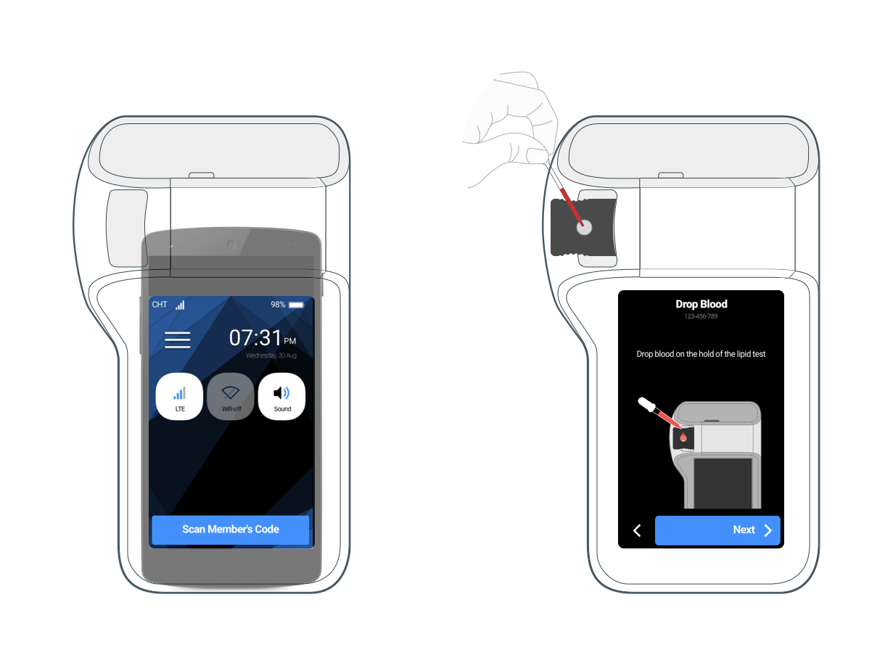

Point of Care Test Project
hiS


User's Journey


App Prototyping
Design this prototype with Origami Studio, for making sure the flow and add some animation effects, check the video to see the prototype. If you want to play this prototype on your Mac, feel free download file here.